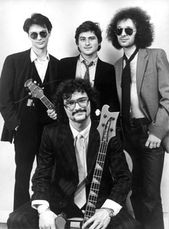

The BLUES RHYTHM SECTION Основана весной 1995 года, в составе:Исполняли блюзовую и ритмэндблюзовую классику периода 40-х-50-х годов. К началу 1996 The BLUES RHYTHM SECTION уже вошла в горячую десятку блюзовых команд москвских клубов. Летом 1996 Евгений Ильницкий покидает группу. В новый сезон 1996/1997 группа входит с количеством концертов, приглашений и работы, больше, чем у многих блюзовых групп в полном составе. Принцип прост: на каждое выступление ангажируется новый музыкант (вокал, гитара) из знакомых "братьев по оружию". В сезон 1996/1997 в составе The BLUES RHYTHM SECTION переиграли многие отечественные и зарубежные (Dave Grout, Felix Fondem) блюзмены. Однако всегда узнаваемый стиль и крепкий основной состав служили гарантией высокого качества исполняемых блюзовых стандартов. Одним из них был Александр Казанков, переигравший в своей время практически со всеми более-менее известными кантри- и блюз-бэндами. Сотрудничество с ним оказалось настолько успешным, что было решено пригласить его постоянным участником The BLUES RHYTHM SECTION. В 1998 году в домашних условиях группа записывает альбом с громким названием The Best Of. Блюз сочинения А.Казанкова "Mr.Sherling" вошел в альбом "Не увижу Миссиссиппи", представляющий лучшие блюзовые записи, сделанные отечественными музыкантами в 90-х годах. Юбилейный концерт в клубе "Китайский летчик Джао-Да" собрал в одной программе весь цвет московской блюзовой сцены. После чего BRS взяли тайм-аут на два года. Летом 2001 Е.Санчилло с контрабасом под мышкой странствовал по Северной и Центральной Европе, выступая блюз-клубах; в качестве эксперимента записал сольный макси-сингл. Стандарт Джимми Рида "Bright Lights, Big City" можно послушать на сайте RealMusic. Группа возвращается к активной деяткельности весной 2002 года в новом составе: Принцип The BLUES RHYTHM SECTION остается прежним - чистосердечный блюз в аккустическом звучании. Контакты:
|